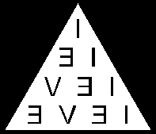
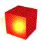
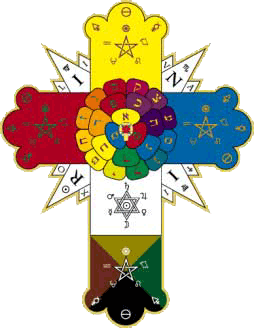
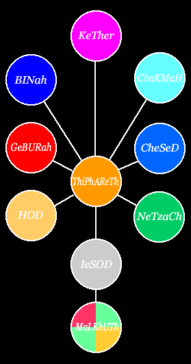

KaBaLa
As principais fontes de informação sobre a Cabala (que, por transliteração se escreve KaBaLa) são o Zohar ou Livro do Esplendor e o Sepher Yezirah ou Livro da Criação. A KaBaLa é a alma ou o espírito da Tradição. O esoterismo só se faz integral se compreendido sob apoiamento na KaBaLa. Na Palestina, a KaBaLa era conhecida pelos Essênios, pelos Caldeus, pelos Essênios, pelos Faraós do Egito Antigo, pelos Babilônios e pelos Sumerianos (aproximadamente 900 a 12000 a.C.).
O Sepher Yezirah (Livro da Criação) descreve a obra da criação, e ensina que há 32 (TRINTA E DUAS) SENDAS DE SABEDORIA e 50 (CINQÜENTA) PORTAS DA INTELIGÊNCIA. As Trinta e Duas Sendas (ou Caminhos) da Sabedoria são:
Inteligência Admirável, Glória Segunda, Inteligência Santificante, Inteligência Receptora, Inteligência Radicular, Inteligência de Influência Média, Inteligência Oculta, Inteligência Perfeita e Absoluta, Inteligência Purificada, Inteligência Resplandecente, Inteligência do Fogo, Inteligência da Luz, Inteligência Indutiva da Unidade, Inteligência que Ilumina, Inteligência Construtiva, Inteligência Triunfante e Eterna, Inteligência da Predisposição, Inteligência ou Morada da Afluência, Inteligência do Oculto ou de Todas as Atividades Espirituais, Inteligência da Vontade, Inteligência que Agrada Àquele que Busca, Inteligência Fiel, Inteligência Estável, Inteligência Imaginativa, Inteligência de Tentação ou de Prova, Inteligência que Renova, Inteligência que Agita, Inteligência Natural, Inteligência Corpórea, Inteligência Coletiva, Inteligência Perpétua e Inteligência Auxiliar.As Cinqüenta Portas da Inteligência, segundo Kircher e citadas por Gérard Encausse (Papus), dividem-se em seis classes, quais sejam:
primeira classe – Princípio dos Elementos (constituída de Dez Portas)
segunda classe – Década dos Mistos (constituída de Dez Portas)
terceira classe – Década da Natureza Humana (constituída de Dez Portas)
quarta classe – Ordens dos Céus, Mundo das Esferas (constituída de Dez Portas)
quinta classe – Das Nove Ordens de Anjos, Mundo Angélico (constituída de Nove Portas)
e sexta classe – AIN SOPh, Deus Imenso (Classe Exclusiva. Esta é a única Porta que o homem mortal não conheceu e pela qual nenhuma pesquisa do espírito penetrou, bem como, Moisés não conseguiu entrar). Para se ultrapassar esta Porta e conhecer os segredos que ela esconde, é preciso ressurgir assintoticamente no seio de AIN-SOPh.O Zohar trata dos atributos da Divindade (os dez Sephiroth, no singular, Sephirah), dos quatro mundos, do bem e do mal, da alma humana e da salvação. O Apocalipse de São João também é considerado um livro cabalístico, mas todas as três obras têm por fundamento o Gênese de Moisés.
A língua de Moisés embute sempre, minimamente, três sentidos: material, simbólico e espiritual. Para os cabalistas, números, medida e peso presidem o Universo, e a criação forma uma Unidade de causas e de efeitos, de tal sorte que cada causa está associada a um número específico. Deve-se também levar em conta que cada letra hebraica é uma potência efetiva, englobando três funções, quais sejam: uma hieroglífica, uma numérica e uma ideativa.
O TRÊS preside a KaBaLa, a KaBaLa preside o Universo, e o Universo e o(s) ser(es) constituem uma única célula. Por isso, pensamentos, palavras e ações não se esgotam em si. E assim, não se move um grão de areia sem que todo o Universo não seja, de uma forma ou de outra, afetado em sua estrutura.
Causa - efeito - causa - efeito - causa...Quanto aos 32 Caminhos de Sabedoria expostos no Sepher Yezirah, por um lado representam a soma dos 10 Sephiroth e das 22 letras, e, por outro, são o resultado da soma do valor numérico da primeira letra e da última letra do Pentateuco hebreu, BET e LaMeD, ou seja, 2 + 30 = 32.
Trinta e dois é também a quinta potência do número dois (2^5= 32).O alfabeto hebraico consiste de três letras matrizes - ALeF, MeM e ShIN– sete letras duplas (que têm pronúncia dupla) e doze consoantes simples. O poder global da KaBaLa se expressa pelas 22 (vinte e duas) letras.
A KaBaLa ensina que o Criador combina perpetuamente 1 ou ALeF, 40 ou MeM e 300 ou ShIN com outros números.A seguir, apresentam-se as correspondências entre as três letras matrizes, o Universo, o ano e o homem:
| LETRAS MATRIZES | UNIVERSO | ANO | HOMEM |
|---|---|---|---|
| MeM | Água (Grande Abismo Águas Primordiais) | Frio | Corpo (Líquido Amniótico) |
| ALeF | Ar (Éter) | Umidade | Coração (Sopro Vital) |
| ShIN | Fogo (Fogo Etéreo dos Céus) | Calor | Cabeça (Fogo do Intelecto) |
Tabela 1: Correspondência Triádica das Três Letras Matrizes
Ainda que no Sepher Yezirah não haja separação do elemento Terra das Águas Primordiais, há autores que sugerem uma QUARTA LETRA MATRIZ – TaV – representativa deste quarto elemento.
Outros sugerem que há uma relação entre o NOME SAGRADO, particularmente das duas letras HE, com as letras mães. Nesse sentido, o Tetragrammaton seria, em verdade, formado só por vogais!
A década é como o clarão de um raio e tem seu FIM LIGADO AO COMEÇO E COMEÇO UNIDO AO FIM. O Sepher Yezirah assim se refere às dez esferas de existência:
Do Espírito do Deus Vivo emanou Ar; do Ar, Água; da Água, Fogo ou Éter; do Éter, a Altura e a Profundidade, o Leste e o Oeste, o Norte e o Sul.O conceito do UM e dos muitos e o retorno dos muitos ao UM encontrado na KaBaLa indica que a DÉCADA TEM COMEÇO E FIM INTERLIGADOS, assim como há uma interligação permanente e indissociável entre a chama e a própria brasa. TUDO ESTÁ ASSOCIADO, POIS O UNIVERSO É ESFERICAMENTE UNO.
O Sepher Yezirah procura demonstrar que todo o Universo emanou gradualmente do espírito do Único Deus Vivo. E se Deus é necessariamente Deus, e se é uma Unidade Absoluta, o efeito imediato Dele provindo só pode ser também uno, ou seja, uma unidade. E como isso aconteceu?
Segundo o Sepher Yezirah, toda criatura e toda palavra emanaram de um nome oriundo da combinação das VINTE E DUAS LETRAS DO ALFABETO HEBREU SEM PERMUTAÇÃO.A fórmula n(n - 1)/2 dá o número possível de combinações das 22 letras duas a duas sem permutação, ou seja:
2(22 - 1) ÷ 2 = 231 (duzentos e trinta e uma) combinações.Deus, falando, criou de um NOME todas as criaturas e todas as palavras. Assim, pode-se entender que o sentido único, exclusivo e verdadeiro da existência é a realização consciente do Verbum Dimissum Inenarrabile, pois, se no princípio era a Palavra, hoje Ela também é, e amanhã também será.
A idéia teológica de que houve um começo e de que Deus raciocina e age por idéias, fracionou e segmentou a Unidade. O atomismo de Leucipo, aprendido com Kananda, na Índia (Séc. VI a.C.), sensibilizou Platão e cooptou Aristóteles, e esse paradoxo, de certa forma, ainda prevalece até hoje.
Na literatura cabalística, os dez Sephiroth podem ser relacionados a esferas específicas e denominados da forma seguinte:
| SEPHIROTH | ESFERAS |
|---|---|
| KeTheR ou Coroa | Espírito |
| ChoKMaH ou Sabedoria | Ar |
| BINaH ou Inteligência | Água |
| CheSeD ou Misericórdia | Leste |
| GeBURaH ou Justiça | Oeste |
| ThiPhAReTh ou Beleza | Fogo |
| NeTzaCh ou Vitória | Sul |
| HOD ou Honra | Norte |
| IeSOD ou Fundamento | Profundidade |
| MaLKhUTh ou Reino | Altura |
Tibi sunt
MaLKhUTh,
GeBURaH
et CheSeD
per æonas.
A seguir, de acordo com a tradição cabalística, apresentar-se-á a Estrutura da Criação. Resumidamente, KeTheR representa a potência ou coroa suprema que repousa sobre ChoKMaH - a sabedoria imutável - bem como sobre BINaH - inteligência criadora. Nele estão permanentemente inscritas CheSeD - bondade - e GeBURaH - justiça - que representam o supremo ideal de beleza - ThiPhAReTh. Também estão presentes NeTzaCh e HOD, respectivamente o movimento sempre vitorioso e o grande repouso eterno. Seu querer é uma criação contínua (IeSOD), e seu reino (MaLKhUTh) é a imensidade que povoa o Universo. Os Sephiroth cabalísticos compõem-se de um tríplice ternário reconduzido à Unidade pela década, de tal sorte que representam a trindade manifestada nos três mundos. O primeiro ternário representa a Trindade Santa e os dois ternários inferiores (invertidos) são apenas reflexos do primeiro. Por último, MaLKhUTh representa o Reino das formas, ou seja, a síntese totalizada, desabrochada e perfeita dos Sephiroth anteriores, em que KeTheR encerra potencialmente a síntese.
Fonte: Alquimia e Misticismo, Alexander Roob, p. 319 (Paulus Ricius, Portæ Lucis, Augsburg, 1516)
Uma comparação interessante pode ser feita entre os Sephiroth cabalísticos e hindus, paralelamente a uma adaptação grega.
| Sephiroth CABALÍSTICOS | Sephiroth HINDUS | ADAPTAÇÃO GREGA |
|---|---|---|
| AIN-SOPH | NIRVANA | PARNASO |
| KeTheR | Brahman | Apolo |
| ChoKMaH | Vishnu | Clio |
| BINaH | Shiva | Urânia |
| CheSeD | Mâyâ | Talia |
| GeBURaH | Oum | Melpomene |
| ThiPhAReTh | Haranghar | Polimnia |
| NeTzaCh | Posh | Caliope |
| HOD | Pradyahpat | Erato |
| IeSOD | Prakrat | Euterpe |
| MaLKhUTh | Pran | Terpsicore |
As três letras matrizes, sob outro aspecto, têm uma significação essencial, que pode ser assim resumida, segundo o Sepher Yezirah:
Deus deixou a letra ALeF predominar no ar primitivo, coroou-a, combinou uma com a outra e formou delas o ar no mundo, umidade no ano e o peito no ser humano...
Deus deixou a letra MeM predominar na água primitiva e coroou-a, combinou-a com a outra e formou delas a terra..., friagem no ano e o ventre no ser humano...
Deus deixou a letra ShIN predominar no fogo primitivo, coroou-a, combinou-a com a outra e formou delas céu no mundo, calor no ano e a cabeça do ser humano.As outras letras, BET, GiMeL, DaLeT, KaF, PhE, RESh e TaV, correspondem aos sete Sephiroth inferiores.
E as doze constelações do mundo, os doze meses do ano e os doze órgãos do corpo humano são simbolizados pelas letras HE, VAV, ZaIN, HeT, TeT, IOD, LaMeD, NUN, SaMeK, AIN, TzaDE e KOF. Isidor Kalisch, no Prefácio do Sepher Yezirah, comentou que, da mesma forma que o diâmetro está sempre relacionado com a periferia, há uma relação entre as 22 letras do alfabeto hebreu e o número sete, que, no caso, representa os planetas conhecidos de então (Saturno, Júpiter, Marte, Sol, Vênus, Mercúrio e Lua).Esta relação (22:7) é igual a 3,142857 142857 142857..., valiosíssima no esoterismo.
Em consonância com as 22 letras do alfabeto hebreu há 22 polígonos regulares possíveis de serem inscritos em um círculo, conforme recordou Serge Raynaud de la Ferrière. Os polígonos são de 3, 4, 5, 6, 8, 9,10, 12, 15, 18, 20, 24, 30, 36, 40, 45, 60, 72, 90, 120, 180 e 360 lados.
A KaBaLa hebraica, segundo Éliphas Lèvi, poderia ser denominada a matemática do pensamento humano. E acrescentou: É a álgebra da fé. Ela resolve todos os problemas da alma como se fossem equações, isolando as incógnitas. Ela dá às idéias a nitidez e a rigorosa exatidão dos números; seus resultados são para o espírito a infalibilidade (relativa, entretanto, à esfera dos conhecimentos humanos) e a paz profunda para o coração.
A KaBaLa possui, ainda segundo Lèvi, um método de raciocínio com base nos seguintes passos:
Evidência —› Certeza
Demonstração Científica —› Certeza
Hipótese Necessária
Hipótese Razoável —› Probabilidade
Hipótese Duvidosa —› Dúvida
Hipótese Absurda —› ErroPara todo e qualquer cabalista, Deus (in corde) é o princípio exclusivo do ser e dos seres e o único postulatum absoluto de toda a ciência. Os antigos estudiosos da KaBaLa estabeleceram o seguinte princípio:
O Ser é. No Ser está a vida. A vida se manifesta pelo movimento. O movimento se perpetua pelo equilíbrio das forças. A harmonia resulta da analogia dos contrários. Existe em a natureza a lei imutável e o progresso indefinido. Modificação perpétua nas formas, indestrutibilidade da substância...Outro aspecto a ser ressaltado é que, enquanto no Sepher o decremento nos modos de existência do Ser opera-se em três momentos, o Zohar desdobra o primeiro e se refere a quatro mundos diferentes ou sucessivos, quais sejam:
Mundo das Emanações ou do Arquétipo (Hwolam ATzILUTh), Mundo da Criação (Hwolam BRIAH), Mundo da Formação ou Astral (Hwolam IeTzIRaH) e Mundo da Ação (Hwolam WShIaH). Em WShIaH, o Véu de Mâyâ(ilusão) oculta tudo.Em conformidade com a tradição cabalística - e particularmente no Sepher - o ser humano compõe-se de três partes: CORPO, ALMA E ESPÍRITO. Segundo Paul Sedir, cada uma dessas partes é o reflexo uma da outra e contém uma imagem das duas outras.
Sob um prisma mais esotérico, contudo, o ser é setenário. Sete é a chave da criação mosaica e dos símbolos de todas as religiões. Nesse sentido, os estados evolutivos são em número de sete, e, descendentemente, assim são entendidos pelos cabalistas:
AIN, Mundo Concentrado da Eterna Negatividade;
AIN SOPh, Mundo Primordial, ou seja, o próprio Ser Infinito;
AIN SOPh AUR, Mundo Pré-Dinâmico, ou seja, a Infinita Luz;
HWOLAM ATzILUTh, Mundo Arquetípico (Adão Kadmon), formado pelos Sephiroth KeTheR, ChoKMaH e BINaH;
HWOLAM BRIAH, Mundo da Expansão (Arcangélico), composto dos Sephiroth CheSeD, GeBURaH e ThiPhAReTh;
HWOLAM IeTzIRaH, Mundo da Estruturação (Angélico), conglobado pelos Sephiroth NeTzaCh, HOD e IeSOD;
e HWOLAM WShIaH, Mundo da Concretização (Humano), ou seja, MaLKhUTh.Portanto, a base do pensamento cabalístico ancora-se no entendimento, de que há uma substância primordial AIN SOPh que se condensa progressivamente até se fazer visível. E, o alto esoterismo compreende que a Divindade mais elevada não possui sexo ou forma, não sendo nem Pai nem Mãe.
A Doutrina Secreta, trazida à luz por Madame Blavatsky, ensina que, os primeiros seres manifestados, quer sejam celestes ou terrestres, só lentamente alcançam a condição de androginia, para, finalmente, se dividirem em dois sexos distintos. Isto aconteceu neste mânvântâra na Terceira Raça Raiz. Entretanto, ainda que tudo possa levar a uma difusa e exclusiva percepção de multiplicidade, do Sol ao vaga-lume, do ILIMITADO ao mais limitado, a Lei que rege as manifestações das coisas criadas (nascimento, existência e desaparecimento), é (perpetuamente) una. E, assim, os cabalistas entendem que O COSMOS É ETERNO EM SUA COLETIVIDADE NÃO-CONDICIONADA, E FINITO SOMENTE EM SUAS MANIFESTAÇÕES CONDICIONADAS.
A KaBaLa Prática fundamenta-se, como se viu, em letras hebraicas (que correspondem às Leis que formaram e governam o mundo), e o alfabeto cabalístico associa-se, por outro lado, à Trindade Divina, aos Planetas então conhecidos e ao Zodíaco: 3 + 7 + 12 = 22.
Esse sistema, do qual o pitagorismo se utilizou, desenvolve-se, já se teve oportunidade de referir, de dez maneiras - os dez Sephiroth.
Como ficou visto, cada letra hebraica representa, minimamente, três aspectos: literal, metafórico e transcendental. Ou como disse Heráclito: verbal, simbólico e oculto.
Combinar as letras hebraicas é combinar números e idéias, e cada uma é, ao mesmo tempo,PONTO DE PARTIDA E PONTO DE CHEGADA DE UMA SÉRIE DE RELAÇÕES.
Francisco Valdomiro Lorenz, Annick de Souzenelle, Papus, Friedrich Weinreb e muitos outros cabalistas acrescentam que cinco letras hebraicas poderão apresentar formas e valores diferentes quando se encontram no final das palavras.
São elas:
KaF (Kh aspirado) = 500;
MeM (M) = 600;
NUN (N) = 700;
PhE (Ph) = 800;
e TzaDE (Tz) = 900.
E o ALeF final poderá apresentar valor aritmológico igual a 1000...E chamar-te-ão por um Nome novo... e serás uma coroa de glória na mão de IEVE, e um diadema real na mão do teu Deus.(Isaías, LXII, 2 – 3).
Cada letra hebraica possui 4 (QUATRO) valores (no mínimo), e que ALGUNS VALORES NUMÉRICOS SE REPETEM EM LETRAS DIFERENTES.
Logo, cada palavra hebraica também pode possuir quatro valores numéricos (no mínimo), dependendo do que está sendo trabalhado e da intencionalidade da própria palavra em si.
Só se possuindo a CHAVE que abre a PORTA DO SACRÁRIO CABALÍSTICO, é que se poderá compreender o real significado do seu conteúdo por Aqueles que a formularam.
Aspecto interessantíssimo da KaBaLa é o relacionado ao NOME DIVINO IEVE ou YHVH, que não deve ser pronunciado pelos profanos, e, por isso, ou é substituído por Tetragrammaton ou por Adonai (Senhor). Desse Nome sai o NOME CABALÍSTICO DE SETENTA E DUAS LETRAS, se inscrito, como abaixo, dentro de um TRIÂNGULO EQÜILÁTERO, ou das próprias letras da palavra IEVE
A segunda letra (HE) da palavra IEVE é a luz negra ou azul ligada às letras IOD, HE e VAV, que constituem a luminosa luz branca. Mas, no tempo, HE converte-se em DaLeT, pobreza. Quando há a separação do homem e da mulher, das duas polaridades ou dos dois princípios, apaga-se o HE e prevalece tão-somente o DaLeT. Na união perfeita, HE se junta à luz branca e escapa à destruição. A desunião é que provoca a oscilação entre repouso e agitação, paz e guerra e vida e morte. Mas a morte, um dia, desaparecerá para sempre, e as lágrimas serão enxugadas de todas as faces (Profecia de Isaías, XXV, 8).
Do exposto, observa-se a inter-relação entre a TETRACTYS PITAGÓRICA e a KaBaLa Prática. As aplicações da aritmética cabalística e suas implicações fogem, entretanto, ao escopo desta pesquisa. Todavia, alguns exemplos ilustrarão esse mecanismo. Há duas operações numéricas básicas: adição e redução. No estudo sobre o Arqueômetro apresentado neste site este tema também foi examinado. No momento, recorda-se que, cabalisticamente, adição é a soma de todos os algarismos que compõem um determinado número superior aos nove primeiros. Por exemplo, 144 por ADIÇÃO CABALÍSTICA dá 1 + 4 + 4 = 9. REDUZIR em KaBaLa é encontrar o número pequeno que resulta da adição progressiva. Por exemplo, 777 reduz-se a três, porque 777 = 7 + 7 + 7 = 21 e 21 = 2 + 1 = 3. Esse conceito é importantíssimo em Alquimia. Já o número 888 - que é o NÚMERO ESPECIAL DE JESUS, o CRISTO - representa a ressurreição e a vida. Por adição é igual a 24, e, por redução, é igual a 6, a héxada, freqüentemente denominada perfeição das partes. O homem, segundo a tradição bíblica, foi criado no sexto dia e Jesus foi crucificado no sexto dia da semana. O valor secreto de 6 é 21 (1 + 2 + 3 + 4 + 5 + 6), equivalente à adição de 777. Ambos se reduzem a 3. Mistério e segredo! Mas 21 são também os passos da GRANDE OBRA. Três peregrinações purgativas e iniciáticas em torno de SETE...
Apresentam-se, a seguir, algumas palavras com seus respectivos valores numéricos:
- IOD - HE - VAV - HE = 10 + 5 + 6 + 5 = 26. IOD representa o Eu (10) e também o Mundo de ATzILUTh. HE representa o Não-Eu (5) bem como o Mundo de BRIAH. VAV representa o gancho que une o ativo ao passivo (6). Observa-se que esta terceira letra ou terceiro ponto é o resultado numérico d soma da primeira com a segunda letra, ou seja, 10 + 5 = 15 e 15 = 1 + 5 = 6. Representa, outrossim, o Mundo de IeTzIRaH. Esses três termos representam em KaBaLa a conhecida LEI TRINITÁRIA DO ABSOLUTO (10 + 5 + 6 = 21 = TRÊS). Aqui aparece novamente o número 21... O Segundo HE indica a passagem do númeno ao fenômeno - a transição - ou seja, a passagem de um plano a outro.
- A palavra IeLeD tem valor numérico igual a 44 equivalente a 8, tanto quanto IEVE. Como se viu, de IEVE são extraídas as 72 letras que compõem o SANTO NOME, que, por sua vez, correspondem aos 72 anjos (ou gênios) que presidem as 72 divisões do Céu, as 72 partes do corpo humano e as 72 nações.
- E, por último, considerar-se-á a primeira frase do Gênesis: BeREShITh BaRA ELOHIM. BeREShITh – que, simbolicamente, significa No começo – equivale às cifras 2–200–1–300–10-400. Estas seis cifras simbolizam as seis forças cósmicas que presidiram a obra, ainda inconclusa, dos seis dias. Este saber também se encontra expresso no Hexagrama de Salomão. BaRA – que significa Criar (no sentido de concepção mental da criação) – possui as cifras 2-200-1. No começo criou Elohim. Sobre a palavra Elohim (ALHIM) duas observações devem ser feitas: sua terminação IM indica caráter plural (AL e ALH) e expressa precisamente Justiça Divina.
Tanto BeREShITh quanto BaRA começam com a letra BET, cujo valor aritmológico é 2 (dois), idêntico a duplicar. Dois alcança sua diferenciação máxima em RESh (200), para depois ser reintegrado novamente na Unidade (1) – ALeF. Só para aquele que ainda vive no nível 2-200 essa possibilidade não foi sentida. E assim, o Universo, como natureza naturada, terá que volver à consciência da Unidade
Por outro lado, ao se dividir BeREShITh em BeRE e ShITh, BeRE contém as cifras 2-200-1, semelhante a BaRA (ou seja, BRA), que somadas dão 203. A adição teosófica produz 5, valor aritmológico da letra HE, símbolo da Vida Absoluta – primeiro HE de IEVE – (há ainda uma correspondência direta entre a letra HE e o hieróglifo egípcio representado por um pequeno homem de pé com os braços abertos em sinal de plena vida).
Já ShITh contém as cifras 300-10-400, que somadas equivalem a 710, que significa repouso. Movimento – repouso. BeRE—ShITh. 710, em outra dimensão, equivale teosoficamente à letra HeT (8), que pretende simbolizar a existência elementar e protoplástica, estando associada ao sentido da visão e à mão direita do corpo humano. Exprime, sob outra ótica, a idéia de equilíbrio (trabalho e ação moral e legislativa). Ainda, por outro ângulo, as cifras 300-10-400 contêm implicitamente as cifras 3 e 4 (homem e mulher), cuja culminação acontecerá em 5 (ou 500). Por isso, quando o tempo se houver cumprido, quinhentos haverá de ser realizado, ou em outros termos, 1-2-1, ou ainda, ABR.......A.
A soma teosófica das cifras de BeREShITh conduz ao número 913, que, por adição, é igual a 13, e, posteriormente, reduz-se a 4. 13 está associado a MeM, décima-terceira letra do alfabeto hebreu, e 4 é o Valor Externo da letra DaLeT. Ambas as letras têm um sentido complementar que envolve os conceitos de maternidade, de fecundidade, de passividade, de abundância, de nutrição e de divisão. Tanto MeM quanto DaLeT representam o segundo ponto do triângulo, ou, o segundo cateto do TRIÂNGULO RETÂNGULO DO TEOREMA DE PITÁGORAS (3, 4, 5).
E assim, a descontinuidade não se perde (ou perderá) em uma progressiva e indefinida divisão, eis que, o limite da expansão diastólica da Consciência sob a forma de NOUS são os elétrons (positivos e negativos). Tudo haverá de retornar ao Um. Prâlâya. Depois, novo Mânvântâra. Indefinida e ilimitadamente.
A KaBaLa, portanto, primeiramente, ensina que o homem (microcosmo) é a representação exata do Universo (Macrocosmo), e é composto por três elementos essenciais, que se sintetizam na unidade do ser. Esse conceito pode ser esquematicamente representado por três pontos (triângulo eqüilátero) desenvolvidos dentro de um círculo:
Ensina também que o Universo tem uma constituição ternária semelhante à do homem, qual seja: um corpo, que são os astros; uma vida, que são as correntes de luz que contêm as forças ativas da natureza; e uma vontade, denominada magnetismo universal, que é a causa da atração universal. Em um nível mais esotérico tudo é setenário. (4 + 3). Ainda assim prevalece a dualidade.
E por último, a tradição cabalística admite e professa que o SER É FEITO À IMAGEM DO UNIVERSO, E AMBOS SÃO FEITOS À IMAGEM DE DEUS. Observa-se este conceito cabalístico expresso fundamentalmente na obra e no pensamento de Plotino. Mas, o que será ser FEITO À IMAGEM DE DEUS? Da queda(?) - e de cada queda(?) - o homem reergue-se melhor e mais forte. O mal(?) só prevalece temporariamente no plano da consciência mâyâvica do ente, pois o objetivo da existência é a realização do melhor. Se este melhor não for realizado, inexoravelmente acontecerá a dissolução. E o melhor está com e em Deus (in imo corde), que é o Caminho e a verdadeira LUZ (TREVAS PRIMORDIAIS) do COSMOS. Está, também, no ser (necessário) que ainda não é (e é) DEUS. Um derradeiro acréscimo deve, porém, ser proposto. Diagramas não faziam parte dos ensinamentos cabalísticos originais. Eles surgiram, com o tempo, quando a KaBaLa tornou-se objeto de estudo de pessoas pouco versadas em sua doutrina, como auxílio para superar suas próprias deficiências. Assim, o símbolo ou o diagrama denominado Árvore da Vida não é um elemento genuíno da KaBaLa e é destituído de qualquer valor metafísico tal como existe. Como símbolo, a Árvore só tem sentido se estiver invertida, com suas raízes brotando da RAIZ DO SER INTEGRAL, com seu tronco atravessando o PLEROMA — (Mundo supraceleste; reino do Pneuma e da Luz. Pode ser simbolicamente, e apenas simbolicamente, entendido como o Deus-Uno, que em dado momento, através de um processo múltiplo e ilimitado de emanações, projeções ou gerações, projeta-se para o exterior de Si Mesmo, desdobrando-Se e gerando a série das entidades divinas – os Eons ou os Dez Sephiroth apresentados na KaBaLa.) — e seus ramos sendo projetados transversalmente até alcançarem o plano terrestre. Nesse sentido, pode-se compreender a Bhagavad Gita, que ensina que, sem a destruição da Árvore da Vida (pois, Nela, o bem o mal estão unidos), não é possível o alcançamento da imortalidade, ou seja, é preciso ir além das raízes para que aconteça a UNIÃO COM KRISHNA. Só assim, a roda das encarnações poderá ser vencida durante esta IDADE DE BRAHMA.
Do Sepher Yezirah extrai-se: Ele é um acima de três, três estão acima de sete, sete estão acima de doze, e todos estão ligados. Esta é, sem dúvida, a chave cabalística secreta que proporciona à mente inquiridora, a esperança de encontrar a reclamada e desejada paz interior. ...e todos estão ligados. E, se todos estão ligados, nada mais adequado e inspirador para concluir este sintético estudo sobre a KaBaLa (20 + 2 + 30), do que uma breve reflexão sobre alguns apotegmas de Tomas á Kempis (1380-1471), monge da Ordem de Santo Agostinho, que, surpreendentemente, teve seu livro – Imitação de Cristo – traduzido em mais e diferentes idiomas do que qualquer outra obra, só sendo superado pela Sagrada Bíblia. Entendeu Kempis que, de uma maneira geral, os homens buscam alcançar o conhecimento. Mas o que vale - perguntou o Padre - o conhecimento sem caridade? Que vale o conhecimento desordenado? Aliás, Saint-Martin fez a mesma observação. Assim, segundo á Kempis, o conhecimento deve tornar o homem mais humilde e mais prudente. E, aquele que melhor conhece a si mesmo, eleva-se mais em seu próprio conceito e não se deleita nas coisas que exaltam os homens. Não faz outra coisa a KaBaLa - e a Tradição em geral - do que estimular e oferecer caminhos que propiciem o autoconhecimento, pois, se conhecendo, o ser conhecerá o TODO. E, conhecendo o TODO, alcançará a Verdade – ainda que sempre relativa. A busca do autoconhecimento - que equivale à busca da LUZ ou da VERDADE - impõe três objetivos, que segundo Blaise Pascal (1623-1662) são:
descobri-lo quando procurado; demonstrá-lo quando possuído; e discriminá-lo do falso, quando examinado.Assim, AUTOCONHECIMENTO, VERDADE E LUZ acabam por se constituir no único foco de interesse para o Cabalista e para o Iniciado, cujas metas são o alcançamento da iluminação interior e servir, incognitamente, sempre que necessário. O que a mão direita faz, a esquerda não precisa conhecer. E quando a iluminação acontece, compreende e realiza que DOIS SÃO UM E UM SÃO TRÊS, E TODOS ESTÃO UNIDOS. Compreende também o porquê do poder das 22 letras do alfabeto hebreu, já que 22 é equivalente a 253 (duzentos e cinqüenta e três), que é equivalente a 10, que simboliza o UM. Por isso, tudo e todos estão unidos...
Recalcitrando um pouco, apresenta-se e se oferece à reflexão um resumo simbólico do significado dos 13 (treze) primeiros números e do número 22:
- UM - Representa a Unidade Cósmica. É o gerador das linhas. Desdobra-se para que haja produção. Representa o Ser, a Energia Absoluta. No princípio era o UM... UM e ALeF representam o ilimitado. AIN SOPh.
- DOIS - É um número binário. Aparece por oposição de UM a si mesmo. Se UM é ativo, DOIS é passivo. UM representa a Divindade; DOIS simboliza a Natureza. É o reflexo do Ser. Nesse sentido, cabalisticamente, a mulher é o reflexo do homem. Dois também pretende representar a androginia cósmica manifesta.
2 —› 3 porque 1 + 2 = 3. - TRÊS - Resulta da união da Unidade com a dualidade. Segundo Éliphas Lèvi, o TRÊS é o fim e a expressão do amor.. . é o filho que participa do pai e da mãe, sem ser nenhum deles. O Triângulo é a figura geométrica que representa o eterno geometrizar da Divindade. É, assim, o símbolo da perfeição. Duas pontas representam as forças duplas (positiva e negativa) universais; a terceira, no ponto de combinação, simboliza a obra pronta - a perfeição. O TRÊS representa também as três principais fases da vida: juventude, idade adulta e maturidade. Ralph Maxwell Lewis (Sâr Validivar) advertiu que em todos os templos antigos, TRÊS DEGRAUS conduziam à entrada desses templos ou aos seus altares. TRÊS é o número que representa a LEI de formação, manutenção e perpetuação do CÓSMICO. Um triângulo dentro de um círculo representa a Eternidade e o Universo Perfeitos. Três são os mundos apresentados no Sepher Yezirah: superior, mediano e inferior. No homem também há três planos: superior (o Espírito localizado, a Vida refletida, o Corpo refletido); mediano (o reflexo do Espírito, a localização da Vida, o reflexo do Corpo); e inferior (o reflexo do Espírito, o reflexo da Vida, a localização do Corpo). Segundo a KaBaLa, em verdade, o ser é formado de três partes: NEPHESH, corpo com o princípio vital; RUACH, a personalidade-alma; NESHAMAH, a centelha divina. Francisco Valdomiro Lorenz recordou que nessas três partes principais do ser (ou três planos conforme se viu) distinguem-se, em cada uma, três graus, que é outra forma de compreender as três subdivisões dos três planos acima apresentados, quais sejam: NEPHESH - 1) concreto no concreto; 2) particular no concreto; 3) geral no concreto. RUACH - 1) concreto no particular; 2) particular no particular; 3) geral no particular. NESHAMAH - 1) concreto no geral; 2) particular no geral; 3) geral no geral. O TRÊS, entre tantos outros simbolismos, emblema, alquimicamente o Enxofre, o Mercúrio e o Sal. A Unidade se divide em Três, e os Três engendram o Quatro. Pelos Quatro, volta-se aos Três, e pelos divinos Três o ser se dilata no Absoluto.
3 —› 6. - QUATRO - É o número da harmonia, da estabilidade, da segurança e dos quatro elementos. É a Unidade agindo sobre o ternário (1 + 3 = 4). Quatro são, por sua vez, os mundos apresentados no Zohar, que desdobra o primeiro, a saber: Mundo das Emanações, Mundo da Criação, Mundo da Formação e Mundo da Ação.
4 —›10 —› 1. - CINCO - O pentáculo (PENTAGRAMA), segundo consta, era conhecido e usado pelos pitagóricos, tendo como significativo primordial a saúde. Cinco representa o espírito dominando os elementos (UM + QUATRO). O pentáculo também representa ADaM-Kadmon - o Adão Celestial ou Homem Primitivo antes da queda - ou IEHOUA. O pentáculo invertido representa ADaM-Belial ou o Adão Terrenal ou homem caído(?) - a inteligência dominada no âmbito da materialidade. Há, todavia, quatro classes adâmicas e o único desprovido de androginia é o terrenal, que atua no plano de MaLKhUTh . A união do primeiro número par ao primeiro número ímpar (2 + 3 = 5) é também um símbolo das qualidades ou potências positivas e negativas. É o sinal de casamento e para os alquimistas representa a quintessência.
5 —› 15 —› 6.
- SEIS - É o símbolo do antagonismo. O que está em cima é como o que está em baixo, ainda que esta Lei não seja bem o que as palavras pretendem expressar. O SEIS tem por símbolo hieroglífico a Estrela de Salomão, e, esotericamente, representa o Criador(?). Representa a unidade das duas fases da existência: espiritual e material.
6 —› 21 —› 3.
-
SETE
7 = 1 + 6
7 = 2 + 5 o CUBO e a CRUZ (LEI SETENÁRIA)
7 = 3 + 4


Sete aparece em um dos mais esotéricos símbolos formado pelo triângulo material, a pomba, o fogo e o coração flamejante, no qual sobressaem os sete dons cósmicos: sabedoria, compreensão, juízo, força, conhecimento, piedade e entusiasmo. O sete aparece também na Estrela de Sete Pontas simbolizando os sete dias da semana, os sete braços do candelabro de Moisés, as sete igrejas da Ásia, os sete selos misteriosos, as sete estrelas à mão direita de Deus, o ponto de unidade dos triângulos nos planos finito e infinito. Sete representa também as tentações contra as quais o ser deve lutar e resistir, ainda que tal resistência e luta provoquem tortura e tormento. Há que ser mencionado também as sete luzes cintilantes do Apocalipse de João (IV, 5) e os sete olhos de IEVE (Zacarias, IV, 10). Sete são também as portas do homem: dois olhos, dois ouvidos, duas narinas e uma boca. Às sete letras duplas do alfabeto hebraico estão associados também os conceitos de vida, paz, ciência, riqueza, graça, semente e dominação, e aos seus opostos: morte, guerra, ignorância, pobreza, abominação, esterilidade e escravidão. A cada sete minutos o ser já é outro. A cada sete anos opera-se integralmente uma mudança física e psíquica em cada ser. Sete são os marcos fundamentais na vida de todos os seres: aos sete, aos quatorze, aos vinte e um, aos quarenta e nove, aos sessenta e três, aos setenta e aos oitenta e quatro anos. Sete são os Arcanjos da Face dos quais os mais conhecidos são: Miguel, Uriel, Rafael e Gabriel. -
OITO
É a balança universal das coisas (8 = 2 x 4). Representa a harmonia entre os planos cósmico e material. Realizadas certas operações numéricas cabalísticas é o número do homem enquanto besta, já que pode ser equivalente a 666 (seiscentos e sessenta e seis).
8 —› 36 —› 666 —› 9.
8 —› 9.
Na realidade: 7 —› 8 —› 9. -
NOVE
9 = 3 x 3. Representa a imagem dos três mundos. Contém todos os outros números; é também o número do iniciado (6 + 3). É o emblema do amor, da beleza, da espiritualidade, do bem, da alegria, da paz, da solidariedade, da bondade e da temperança. Deixa patente inteireza e perfeição final, pois representa as três voltas em torno do Triângulo. Seu símbolo esotérico é a estrela de nove pontas.
9 —› 45 —› 9. -
DEZ
REPRESENTA A INEXISTENTE ETERNIDADE. É EQUIVALENTE À IRREDUTÍVEL UNIDADE. O ponto no centro do círculo representa a Divindade, e o círculo simboliza o Universo sem começo ou fim. É o número simbólico do ciclo perfeito e ilimitado.
10 —› 55 —› 1. -
ONZE
Segundo Francisco Valdomiro Lorenz, ONZE representa o grande agente mágico, a força oculta e cega, quando não é bem dirigida. Sob um aspecto esotérico-cabalístico, ONZE equivale a DOIS, e, sob outro, equivale a TRÊS. Seu valor secreto é 66. No Tarô simboliza a FORÇA. ABRACADABRA. SOL.
11 —› 66 —› 12 —› 3 -
DOZE
12 = 3 x 4 e 12 = 4 x 3. Doze é um dos números mais complexos, sagrados e esotéricos da Tradição. Sobre ele, poder-se-ia escrever uma verdadeira obra de tomo. Entretanto, resumidamente, tem-se: DOZE patenteia a mais completa e perfeita harmonia. DOZE é representado esotericamente pela estrela de doze pontas e refere-se aos discípulos, aos signos zodiacais, aos meses do ano, aos filhos de Jacó, ao Conselho da Sabedoria Divina, ao CONCLAVE DOS SANTOS MESTRES que moram entre os homens, à reunião dos profetas... Por um lado, este número é equivalente a TRÊS, por outro, a SEIS, e, sob outro aspecto, a NOVE. O Zodíaco ainda pretende representar as doze classes de seres humanos. Doze está também associado às letras simples do alfabeto hebraico e seus fundamentos são: visão, audição, olfato, palavra, nutrição, coabitação (coito), ação, locomoção, cólera, riso, pensamento e sono. E, por último, pode-se associar o número doze com as doze diretrizes do ser, quais sejam: as duas mãos, os dois pés, os dois rins, o fígado, a bílis, o baço, o cólon, a bexiga, e as artérias. Não pretendendo mencionar o óbvio, recorda-se que o quadrado de doze é igual a cento e quarenta e quatro (122 = 144). Seu valor secreto é 78, isto é: 12(12+1)÷2.
-
TREZE
É, segundo Papus, o Número do Amor Eterno, representado, basicamente, por Jesus e os doze Apóstolos. Por adição é igual a quatro (1 + 3), que corresponde às quatro letras da palavra sagrada IEVE. Por outro lado corresponde a DaLeT, quarta letra do alfabeto hebraico. Também é equivalente ao número 10 (dez), e à letra IOD. Pode simbolizar também Jacó e seus filhos. 13 simboliza também a Morte Iniciática (Examinar Chapa XIII do Tarô). Seu valor secreto é 91.
13 —› 4
13 —› 91 —› 10 —› 1 -
Deve-se acrescentar ainda que 22 (vinte e dois) representa o círculo sem princípio nem fim. Simboliza também os vinte e dois Arcanos Cabalísticos, representados pelas vinte e duas letras hebréias contidas no Salmo CXIX. EU SOU O ALEF E O TAV. Em números inteiros, um diâmetro de 7 (sete) tem uma circunferência de 22 (vinte e dois). Ao se dividir 22 por 7 (22/7) encontra-se, como já se mencionou, 3,142857 142857 142857... cujo resíduo, repetindo-se eternamente, representa esotericamente a ação da vida. O repetidor - 142857 - sempre foi considerado um NÚMERO SAGRADO. Outra representação para o número 9 (nove) é 999 999 999..., ou seja, o Número do Ilimitado - do Universo Ilimitado - vale dizer, de uma série de noves de ilimitadas casas decimais. Ao se dividir 9 por 7 (9/7) obtém-se o número da Evolução Infinita: 1,2857 142857 142857 142857... Por outro lado, em um cubo há 9 (nove) pontos e 7 (sete) dimensões. Os pontos são seus oito cantos e o centro. As dimensões são: uma perpendicular, duas horizontais e quatro diagonais. O centro do cubo é o ponto (único ponto) no qual suas sete dimensões se interceptam. Mas o cubo é um Ego - Um - conforme ensinou Hachuep. E, assim, se alcança o 10 (dez). Ao se dividir o Ego do Cubo (9 + 1) por 7, (ou seja, 10 /7), obtém-se: 1,42857 142857 142857... Cubo... Obra... Lapis... Outras relações podem ser estabelecidas, inclusive a partir da permutação de 7 (Sephiroth inferiores), que é igual a 5040 (cinco mil e quarenta). O resultado será sempre o NÚMERO SAGRADO 142857, expressão numérica de LUZ, VIDA e AMOR, que representa explicitamente o NÚMERO DA ETERNA EVOLUÇÃO DO UNIVERSO. 142857 —› 9. Realmente, qualquer número que não seja irracional, múltiplo ou submúltiplo de 7, dará como resultado da divisão por 7 uma dízima periódica simples ou composta, na qual aparecerá sempre o NÚMERO DA ETERNA EVOLUÇÃO DO COSMO ILIMITADO. Mas os resultados das divisões 9/7, 10/7, 22/7, 24/7, 365/7 e outros, têm aplicações esotérico-cabalísticas que, certamente, merecem uma atenção especial e mais acurada.
-
A KaBaLa decifrou o significado esotérico-espiritual das três frases cabalísticas que aparecem no Livro do Êxodo (Capítulo XIV, versículos 19, 20, 21). Cada uma das frases, escritas em hebraico, contém 72 LETRAS que revelam a combinação dos 72 NOMES SAGRADOS com os quais a Divindade se manifesta. Esses NOMES são ENERGIAS que regem e equilibram as LEIS DA NATUREZA MANIFESTADA, e são semelhantes a canais que transmitem a combinação harmônica de LUZ, de ENERGIA (VIDA) e de AMOR.
Esta fórmula é denominada de OS 72 NOMES DE D’US. Eles não são própria e simplesmente nomes. Os 72 NOMES são as sequências de 3 LETRAS compostas de LETRAS HEBRAICAS que têm o poder extraordinário de equilibrar as leis da natureza humana. Estas 72 sequências estão, na verdade, codificadas na história da Bíblia, e são como que condutores que transmitem vários tipos de energia desde os PLANOS SUPERIORES até o MUNDO DA CONCRETIZAÇÃO. -
Como preconizava Saint-Martin, o Caminho é Interior – in Corde. Na realidade, não precisamos de nada que esteja do lado de fora nem dos outros, sejam anjos, sejam homens, sejam lá quem forem; temos tudo à disposição em nosso Coração. E assim, a própria KaBaLa, tema do presente estudo, por si-mesma, não leva ninguém a lugar nenhum. A KaBaLa só ajudará se, por assim dizer, 'KaBaLizarmos' a nossa vivência e a nossa consciência. O fato é que ler e/ou estudar a KaBaLa sem mudançarmos o nosso interior é continuar na mesma e na mesma ficar – com KaBaLa ou sem KaBaLa. Pronunciar uma Palavra de Poder simplesmente por pronunciar é inútil.
-
Existe na [personalidade-]alma um Princípio Superior à natureza exterior [objetiva]. Através deste Princípio, poderemos ultrapassar o Cosmos e os sistemas do nosso Universo. Quando a [personalidade-]alma se eleva às Essências Superiores [oitavas mais elevadas do Teclado Universal], abandona este Cosmos ao qual está temporariamente ligada. E, por um magnetismo misterioso, ela é atraída para um Plano Superior com o qual se mistura e se identifica...
-
Quem quer que se aproxime [da Divindade] sem estar purificado atrairá sobre si a condenação e será entregue ao Espírito do Mal.
-
A KaBaLa nunca se dedicou a qualquer outra coisa que não tivesse sido a manifestação do próprio Mistério! Não parece haver outra coisa na KaBaLa do que a Arte de tirar anagramas místicos do texto oficial do Pentateuco, enriquecendo, assim, a lista, já longa, dos "Nomes Divinos". Em realidade, a KaBaLa é a Via Iniciática Tradicional do Ocidente Cristão.
 -
Toda ascese permite que se alcance certos níveis de consciência normalmente inacessíveis. Isto, incontestavelmente, é equivalente à uma "Realização Iniciática".
-
Existe na alma um Princípio Superior à Natureza exterior. Por este Princípio, podemos ultrapassar a ordem e os sistemas deste mundo, e participar da vida imortal e da energia das Essências Celestes. Quando a alma se eleva por caminhos da Natureza superiores à sua, ela abandona o Ordem à qual está temporariamente ligada, e, por um magnetismo espiritual, é atraída para um Plano Superior com o qual se mistura e se identifica.
-
Uma força oculta, adormecida pela queda, está latente no Homem. Ela pode ser desperta pela Graça Divina ou pela arte da KaBaLa.
-
O Adepto age altruística e ocultamente para a melhoria dos interesses superiores da coletividade. [Silêncio!].
-
IESOUSHOUAH é um dos Nomes Divinos da Sephirah GeBURaH.
-
A KaBaLa é a Doutrina Eterna, dissimulada sob todos os símbolos e em todos os relatos lendários, simplesmente veiculada por tradições vindas do fundo das idades. O esoterismo gnóstico-cristão foi seu principal mensageiro.
-
KaBaListas = Mestres dos Mistérios da Torá. A KaBaLa é, por assim dizer, uma oposição à casuística talmúdica, uma forma de revolta da fé contra a lei. Ela é o refúgio dos espíritos que não se encontram cômodos nas malhas sutis e inextricáveis das leis talmúdicas e no quadro estreito das fórmulas rituais, cultuais e litúrgicas, buscando uma fonte de Água Viva.
-
O Infinito [Ilimitado] é o Ser absolutamente perfeito-sem-lacuna. Pois, quando se diz que há Nele uma força ilimitada, mas, não a força a se limitar, se introduz uma lacuna em Sua plenitude. Por outro lado, se diz que o Universo – que não é perfeito – provém diretamente Dele, se declara que sua potência é imperfeita. Pois bem, como não se pode atribuir nenhuma lacuna à Sua perfeição, é preciso, necessariamente, admitir que o En-Sof [AIN SOPh] tem o poder de limitar, e o dito poder é Ele mesmo Ilimitado. Uma vez que este limite sai Dele em primeira linha, são os Sephiroth [Obreiros Divinos, Forças Energéticas Inteligentes] que constituem, ao mesmo tempo, a potência de perfeição e a potência de imperfeição.
-
Ação gradual dos Sephiroth: A primeira potência é destinada a se manifestar onde preside a Força Divina, a segunda é a Força dos anjos, a terceira é Força profética, a quarta esparge a graça entre as essências superiores, a quinta derrama o terror de sua força, a sexta verte a piedade sobre as coisas inferiores, a sétima faz crescer e fortifica a alma sensível em desenvolvimento, a oitava produz a gradação sucessiva, a nona faz emanar a Força de todas as outras, a décima é a via pela qual o conjunto de todas as outras Forças se difundem no mundo inferior.
-
Não é suficiente para ser digno das grandes revelações ser um homem de estudo. Antes de tudo, é necessário ser um homem de fé. Não é suficiente conhecer a Bíblia, a Mischnah e a Haggadah. Tudo isto é vão se não se tem a fé, se não se aspira com confiança, no cansaço do curso comum da vida, a sublime e misteriosa Merkabah.
-
A [obra medieval de KaBaLa Prática] Sepher Raziel se apresenta como o estudo que forneceu à KaBaLa Prática e em geral à tradição judaica seu arsenal mais rico em amuletos, talismãs, fórmulas propiciatórias, fórmulas curativas, misturas mágicas, filtros de amor e de ódio e petições.
-
As Vias pelas quais se revelam as intenções verdadeiras e os mistérios da Lei são em número de três: o Notarikon [acrologia], a Gematria [evolução numérica] e o Ziruph [permutação]
-
Segundo Abraham ben Samuel Abulafia, a KaBaLa compreende dois domínios: um concernente ao conhecimento de Deus por meio dos dez Sephiroth, e o outro concernente ao conhecimento de Deus por meio das vinte e duas letras que compõem os nomes e os signos e que conduzem à aspiração profética.
-
Abraham ben Samuel Abulafia: YHVH, YH e ALHIM [Elohim] são os Três Nomes Sagrados [Santo, Santo, Santo] que testemunham o Mistério da Trindade e da Trindade na Unidade [Sabedoria, Inteligência e Ciência].
-
Deus tem um Nome Uno, se fazendo notar Sua Substância Una, mas, que, entretanto, é tríplice, todavia, sendo esta Trindade una.
-
Os Sephiroth estão no plano da Natureza Naturante. Especificam a emanação, pelo Pensamento Divino, das condições de possibilidade para a criação, a conservação e a perfeição de toda realidade.
-
KaBaLa = KaBaLa Mística + KaBaLa Prática —› Mediação entre o Absoluto e o Relativo.
-
Nomes Divinos Expressões Imaginadas dos Aspectos do Absoluto.
-
Divino Conhecimento = Chave do Eterno Vir-a-ser.
-
Sephiroth = Emanações. Os Sephiroth são a potência de ser de tudo o que é, de tudo o que está sob o conceito do Número Puro. (Ezra-Azriel). Os Sephiroth, quanto à essência, aderem a Causa Primeira, mas, quanto a operação, são mediadores que representam a Causa Primeira. (Moisés de Córdoba). Os Sephiroth são as potencialidades emanadas pelo Absoluto, AIN SOPh, e são todos, necessariamente, entidades limitadas pela quantidade, que, como a vontade, sem mudar de natureza, diferencia as coisas, que são as possibilidades das coisas multiformes. Os Sephiroth são os intermediários entre o Absoluto AIN SOPh [Natura Naturans] e o mundo contingente [Natura Naturata]. (Baruch Spinoza).
-
Para o Ser, que é a Causa e o Governo de todas as coisas, compreendemos o que é AIN SOPh, quer dizer um Ser Ilimitado, livre, absolutamente idêntico a Si-mesmo, unido em-si, sem atributos, nem vontade, nem intenção, nem desejo, nem pensamento, nem palavra, nem ação, de tal sorte que estes atos dependem, de fato, uns dos outros.
-
Se a Causa Primeira do mundo é ilimitada e imanente, nada pode existir fora Dela mesma.
-
Os Sephiroth, ao mesmo tempo receptivos e comunicativos, ainda que em íntima conexão com AIN SOPh (consubstanciais com AIN SOPh) e constituam um Todo Perfeito, em sua pluralidade são necessariamente imperfeitos.
-
Por que existem dez Sephiroth? Porque todos os corpos têm dimensões, e cada dimensão repete as três outras. Se aí acrescentarmos o espaço, obteremos: (3 x 3) + 1 = 10. Logo, como os Sephiroth são as potencialidades de tudo o que é, eles só podem ser em número de dez.
-
É impossível ao Homem definir o que Deus não é.
-
AIN SOPh AUR – Luz Vazia e sem Limites (Divindade Negativa).
-
AIN SOPh – Vazio Obscuro e Ilimitado (sem fim, um-em-si, sem atributo, sem vontade, sem idéia, sem intenção, sem palavra, sem ação).
-
Entre o que jamais foi, o que não é e o que não será e o que sempre foi, é e será há uma "Passagem" – o "Umbral" – e se chama KeTheR, a "Coroa de Eternidade" [que, como explicou Éliphas Lèvi, é a Potência ou Coroa Suprema que repousa sobre a Sabedoria Imutável (ChoKMaH) e a Inteligência Criadora (BINaH)].
-
Sobre as margens do último "Umbral", há o "horror que não tem nome" – o "nada absoluto" anunciado por Moisés Maimônides.
-
O Ilimitado é o Ser absolutamente perfeito sem lacuna. Pois, quando se diz que há Nele uma força ilimitada, mas, não a força para se limitar, se introduz uma lacuna em Sua plenitude. Por outro lado, se dizemos que este Universo – que não é perfeito – provém diretamente Dele, se declara que Sua potência é imperfeita. Pois bem, como não se pode atribuir nenhuma lacuna à Sua perfeição, é preciso, necessariamente, admitir que o AIN SOPh tem o poder de se limitar, cujo poder é Ele mesmo ilimitado. Uma vez saído Dele diretamente esse limite, esTes são os Sephiroth que constituem ao mesmo tempo a potência de perfeição e a potência de imperfeição. Em efeito, quando eles recebem a plenitude superabundante que emana de Sua perfeição, eles têm uma potência perfeita, mas, quando o escoamento não lhes chega, eles têm uma potência imperfeita. Eles tem, por conseqüência, o poder de agir ao mesmo tempo de uma maneira perfeita e de uma maneira imperfeita. A perfeição e a imperfeição fundamentam a variedade das coisas.
-
Os Sephiroth são a potência de ser de tudo o que [foi,] é [e será], de tudo o que é limitado, de tudo o que está sob o conceito do Número.
-
Tudo aquilo que é limitado se separa em uma substância e um lugar, pois, não há substância sem lugar e não há lugar sem a presença de uma substância.
-
A Unidade é o fundamento de todos os números, e, conseqüentemente, a multiplicidade sai da Unidade.
-
Toda coisa para ser perceptível deve ser limitada.
-
O primeiro Sephiroth [KeTheR] existe em Deus desde toda a eternidade, mas, somente "em potência".
-
Os Ophanim desembaraçam o caos, os Aralim mantêm a forma da matéria sutil, os Hasmalim asseguram a representação da efígie dos corpos e das formas materiais, os Serafim produzem os elementos, os Malachim produzem o reino mineral, os Elohim produzem o reino vegetal, os Beni Elohim produzem o reino animal, os Querubim presidem a a criação dos homens e os conduzem para a Vida Eterna e os Ischim dão aos homens a inteligência e a compreensão das coisas divinas.
-
O Mal, como entidade pura, não existe. É a maior ou menor ausência do Soberano Bem (a Essência Divina mais ou menos retirada de alguma coisa) que dá a ilusão.
-
A Década Sagrada se encontra ainda na Mitologia Grega, com Apolo e as Nove Musas, que são: Apolo [a Glória], Clio [a História], Urânia [a Metafísica], Tália [a Comédia], Melpômene [a Tragédia], Polímnia [a Eloqüência], Calíope [a Epopéia], Erato [a Poesia Ligeira], Euterpe [a Música] e Terpsícore [a Dança].
-
Merkaba é uma tradição mística da KaBaLa que retrata o Merkabah ou Trono ou Carro de Deus, que podia subir ou descer através de diferentes câmaras ou palácios celestiais conhecidos como Hekhalot– o último deles revelava a Divina Glória de Deus. Durante o período do Segundo Templo, a Visão de Ezequiel foi interpretada com um vôo místico para o céu, e os Místicos KaBaListas desenvolveram uma técnica para usar o símbolo do Merkabah como ponto focal de meditação. O místico faria uma viagem interior para os sete palácios e usaria os nomes mágicos secretos para garantir uma passagem segura por cada um deles. Até bem recentemente, estes procedimentos e fórmulas místicas só eram conhecidos pelos estudiosos da KaBaLa. Contudo, os textos relevantes do Hekhalot Maior – o principal trabalho dos místicos do Merkabah – foram publicados em inglês no importante livro intitulado Meditation and Kabbalah (1982), de autoria de Aryeh Kaplan.
-
Uma egrégora vive no plano físico agindo por intermédio dos homens [dos seus filiados], e no Plano Superior por intermédio das Entidades [à ela vinculadas]. A República, a pátria, a justiça, a guerra, a fome etc. também tem imagens egregóricas.
-
O Homem vitalizando conceitos necessariamente os antropomorfiza.
-
A vida material das egrégoras é assegurada pelo número de seus membros e pela disciplina, união espiritual e estrita observância dos ritos vivificadores e conservadores.
-
YHVH + ADoNaY = YHVHADoNaY. [4 Letras + 4 Letras = 8 Letras]
-
MaLKhUTh, a Rainha, último estado (inferior) da Manifestação Divina. Estamos em MaLKhUTh e MaLKhUTh está em nós.
-
Postulados que emanam da Tri-Unidade Divina: 1º) se a Mãe (a Esposa, a Rainha, a Noiva do Rei e do Pai) está em nós, estamos, por via de correspondência analógica, na Mãe; 2º) se a Mãe é una com o Filho (ou Pai), estando na Mãe, estamos no Filho, e a Mãe estando em nós, o Filho também está; e 3º) se o Filho (ou Pai) é uno com o Pai (ou Ancião dos Dias), e se o Filho está em nós, o Pai também está em nós.
-
Um ritmo apropriado vence, no final, as mais fortes resistências.
-
Este reflexo da Mãe que levamos em nós, esta Centelha Divina que emana e se situa na extremidade inferior da coluna vertebral (Kundalini = Ruach Elohim = Espírito Santo), na região dos órgãos geradores, agrupa em um só feixe todas as energias diversas (conscientes e inconscientes), que agem, cada uma por sua conta, no mental. Ela lhes faz tomar, então, uma só direção.
-
A Árvore da Vida (com os seus Dez Sephiroth) sustenta todo o Mundo da Emanação, toda a criação celeste, todo o Universo material e todo ser vivo.
-
Pilar do Rigor = BINaH + GeBURaH + HOD.
-
Pilar da Misericórdia = ChoKMaH + CheSeD + NeTzaCh.
-
Pilar do Equilíbrio ou Caminho Real = DATh11 + ThiPhAReTh + IeSOD.
-
O Verdadeiro Caminho de Ruach Elohim (Energia Divina emanada da MaLKhUTh Celeste) é o que vai de MaLKhUTh a KeTheR, passando por IeSOD, ThiPhAReTh e DATh.
-
Ruach Elohim (Kundalini Espírito Santo) está habitualmente adormecida em nós (em estado causal e não-manifesto), e reside como centelha e possibilidade na Sephirah inferior, nosso próprio MaLKhUTh. Ao se elevar, Ruach Elohim vai se situando em níveis cada vez mais altos, alcançando, por fim, o centro supremo – o KeTheR Humano [a isto é denominado Illuminação].
-
Pela meditação, alguns aspirantes chegam a contemplar o Ser Universal dentro deles mesmos e através do Ser Individual.
-
Devemos sempre estar atentos para o perigo de uma elevação de consciência prematura [extemporânea]. Por um incidente fortuito, a força emotiva que se exerce em um dos Sephiroth superiores de nossa Árvore pessoal pode, como uma avalanche, descer bruscamente sobre um Sephirah inferior, suscitando, aí, uma excitação anormal dos reflexos animais e suas "lembranças" biológicas.
-
As provas místicas, geralmente, se manifestam por três dos principais "pecados capitais": o orgulho (exageração da virilidade), a cólera (exageração da combatividade) e a luxúria (exageração da afetividade).
-
Na oração, é necessário que o homem interior – aquele que Louis-Claude de Saint-Martin chama Homem de Desejo – seja desperto e dinamizado.
-
A preguiça é a mãe de todos os vícios.
-
A Primeira Virtude é a Força ou Fortaleza = Fogo. É necessário ser forte contra o mundo, contra nós mesmos, contra nossos vícios.
-
A Segunda Virtude é a Prudência = Terra. Tudo o que parecer apresentar uma justificativa de preeminência da carne sobre o espírito deve ser rejeitado.
-
A Terceira Virtude é a Temperança (Misericórdia, Doçura, Indulgência, Perdão) = Água.
-
A Quarta Virtude é a Justiça (Retribuição Exata) = Ar.
-
A Quinta Virtude é a Fé (Confiança, filha da Certeza) = Enxofre. A Fé, antes de tudo, tem sua fonte na verdade e na franqueza. A Fé depende totalmente da veracidade das nossas palavras, dos nossos atos e, sobretudo, dos nossos pensamentos. Fé é franqueza.
-
A Sexta Virtude é a Esperança (Ação Concertada) = Mercúrio.
-
A Sétima Virtude é a Caridade = Sal. [A Verdadeira Caridade está em fazer pelos outros sem esperar que os outros façam por nós].
-
Setenário = Fortaleza + Prudência + Temperança + Justiça + Fé + Esperança + Caridade.
-
Sabedoria + Compreensão = Pedra Filosofal [Illuminação].
-
Atributos KaBaLísticos de MIHAeL: virtude de Deus, casa de Deus, semelhante a Deus.
-
DATh, em hebraico, significa Conhecimento. No Misticismo Judaico, DATh é a localização (um estado místico), onde todos os Dez Sephiroth da Árvore da Vida estão unidos como se fossem um só. Os Sephiroth abaixo de DATh são conhecidas como Microprosopos, ou seja, o Universo Manifesto; os Sephiroth acima de DATh são o Macroprosopos ou Universo Imanifesto. DATh não é uma emanação independente como as outras dez. Ela depende de ChoKMaH e BINaH.
-
O Verbo tomou a forma de Letras do Alfabeto, que emanam todas do Ponto Supremo (KeTheR). As Letras são sinais representativos de Sons, e estes Sons são a manifestação do Verbo. As Letras deram [e continuam a dar] nascimento a todas as formas e a todas as imagens que existem no mundo, no seio da Natureza Naturante [Natura Naturans]. Cada uma das 22 Letras é a inicial, a cabeça, a condutora, de uma Palavra-idéia do Logos. -
Como, em Aritmética, tudo se reduz a reconduzir um número qualquer a um dos dez primeiros, inelutavelmente, se vê que qualquer palavra poderá ser reconduzida, pela adição dos valores numerais das Letras que a compõe, a um dos dez números primordiais, e, assim, se ligar a um dos Sephiroth.
-
Na Gematria, nomes que tenham uma soma numeral semelhante são da mesma família, e, efetivamente, pertencem à mesma Sephirah.
Por exemplo, AChD (Unidade) e AHBH (Amor) têm o mesmo valor numérico 13. AChD (1 + 8 + 4 = 13) e AHBH (1 + 5 + 2 + 5 = 13). 13 pode ser reduzido a 4 (1 + 3), e assim, ambas as palavras pertencem ao Sephirah CheSeD (ou Misericórdia). -
Notarikon é a técnica KaBaLística de tomar a letra inicial de uma frase e formar uma palavra. Por exemplo, da frase Ateh Gibor Le-Olam Adonai [O Senhor é poderoso para sempre] pode-se criar AGLA.
-
As Forças Divinas são inseparáveis. Em qualquer Sephirah, no topo há um reflexo de KeTheR, e, no final, há um reflexo de MaLKhUTh.
-
32 Caminhos da Sabedoria/32 Eons Primordiais = 10 Números + 22 Letras.
-
O Número é uma potência metafísica dinâmica, uma verdadeira entidade. Sephiroth = Números Puros.
-
As Letras são os Canais ou Caminhos (Cineroth), como os Números são os Sephiroth.
-
A relação que se estabelece entre a Letra e o Número equivale à relação entre o Verbo e o pensamento.
-
Os Números equivalem aos dez pensamentos essenciais do Absoluto; as Letras equivalem às vinte e duas manifestações essenciais do Absoluto.
-
A Letra é a forma material do Som; a Palavra é o veículo do Pensamento; o Pensamento é alma da Palavra.
-
AIN SOPh AUR = Luz Vazia e Ilimitada = Primeira Porta que conduz ao Não-ser.
-
ATzILUTh = Plano da Divina Pureza. O próprio Deus.
-
EHEIEH = Aquele-que-é – O Ancião dos Dias – A Cabeça Branca – O Ancião dos Anciões – A Existência das Existências – A Inteligência Admirável e Oculta – A Glória Primeira.
-
AIN SOPh = Luz Onipotente e Altíssima, Infinita, que nenhum pensamento ou especulação humana pode alcançar, e cuja existência está afastada de todo intelecto, e que sempre existiu antes de todas as coisas manifestadas, criadas, formadas e aparecentes por emanação, na qual jamais houve tempo e que jamais teve origem, pois, Ela sempre existiu, permanece e permanecerá sempre sem começo e sem fim.
-
KeTheR = Coroa de Eternidade – Umbral da Eternidade – Fonte de Tudo – Aspecto Inferior do Ilimitado não-manifesto e Aspecto Superior do Ilimitado manifesto.
-
IOH IEOHOUAH = O Ser dos Seres – Deus dos Deuses = ChoKMaH (segunda manifestação saída da primeira) – Filho do Pai – Glória Segunda – Poder Criador.
-
IEOHAUAH ELOHIM = Grande Mãe = BINaH – Ela, os Deuses – Inteligência Divina – Ser dos Seres – Inteligência Santificada – Fundamento da Sabedoria – Criatura da Fé – Sombria Mãe Estéril – Brilhante Mãe Fecunda – Trono de Sabedoria.
-
KeTheR + ChoKMaH + BINaH (Três Primeiras Pessoas Divinas) = Macroprosopo ou Grande Rosto. GeBURaH – Justiça Divina ou Rigor. CheSeD – Misericórdia Divina. ThiPhAReTh – Beleza Divina – Inteligência Mediadora. NeTzaCh – Vitória – Eternidade. HOD – Honra. IeSOD – Fundamento. MaLKhUTh – Reino – Inteligência Resplandecente – Umbral da Sombra da Morte – Umbral dos Prantos – Umbral de Justiça – Umbral de Prece – Umbral da Filha das Potências – Umbral do Jardim do Éden.